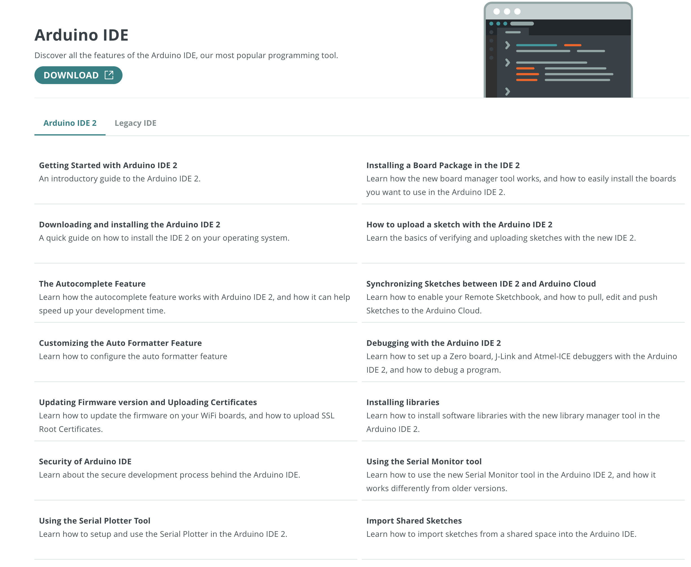
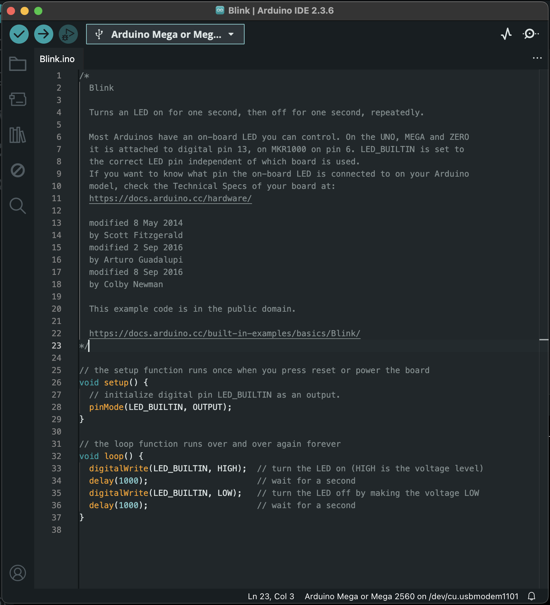
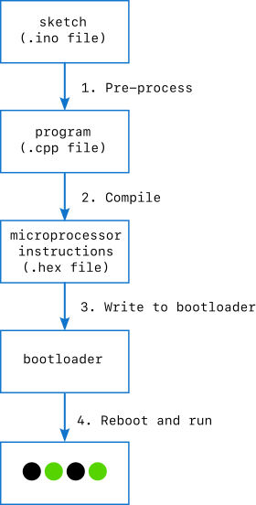

Why Arduino?
Arduino gives builders a gift—a way to bridge the gap between code and the physical world. At the heart of every Arduino board is a programmable microcontroller chip with names like ATMega2560 and ARM-Cortex-M. If you imagine a laptop, take away the screen and the keyboard, and shrink everything else down to a miniature scale, you won't be too far away from a microcontroller.
Microcontrollers come in a single integrated circuit, like this.

Arduino helps out hobbyists by putting them on a larger board like this.

The Arduino board gives easy access to the tiny pins of the IC and makes it possible to plug in standard connectors for power and USB communications.
What makes the microcontroller so powerful isn't its computational capabilities (they are pretty pathetic compared to the processor in your phone). What makes it special is the large collection of input/output pins.
- Digital I/O pins which can pass high (3.3 or 5 Volts depending on the board) and low (0 Volt) signals to another circuit, as well as read high and low signals from them.
- Analog input pins, which use an analog-to-digital converter to read the voltage from an outside source to a fine resolution.
- Analog output (DAC) pins, which use a digital-to-analog converter to sustain a pin at any voltage from a near-continuous range.
- PWM (Pulse-width modulated pins, which approximate an analog voltage by rapidly switching back and forth between high and low voltages. For example, to maintain an average voltage of 2.2 Volts, a PWM signal will switch between 0 and 3.3 Volts, spending two-thirds of its time at 3.3 V and one-third of its time at 0 V.
- Specialized communication protocol pins, like UART, CAN, I2C, and SPI.
Shields and Carriers
A microcontroller on its own is cool in concept, but isn't particularly useful. Arduino makes it easy to extend them by adding on other components. These extension boards can be stacked below (carriers) or above (shields) the Arduino boards on rows of carefully laid out pins. Shields seem to be much more common than carriers.
Shields give you a huge Swiss Army knife of tools
- Ethernet
- WiFi (although some boards come with this)
- Extra memory
- Relay switches
- Motor controllers
- Temperature other environmental sensors
- Inertial measurement units
- Microphone and some speech processing
- Camera and some vision processing
- LED and LCD displays
Models and form factors
There are a handful of different form factors with names like UNO, MKR, Portenta, Nano, and Giga. Here is a really helpful breakdown of the different boards and some of the shields and carriers that go with them. When in doubt, start with the latest UNO base and build from there. UNO is meant to be a somewhat universal starting point.
Most Arduino boards and shield are physically compatible, although this post on the Arduino forum strong encourages us to check the voltage (3.3 V vs 5 V) compatibility and the software library compatibility as well.
Because all Arduino designs are open, there are a large number of Arduino-compatible , Arduino-adjacent, and Arduino spinoff boards and shields. It can all get a little overwhelming. It's the downside of not having a single corporate overlord dictating a conveniently consumable lineup of marketing-approved SKUs. Read item descriptions and blog posts carefully, prepare for some thoughtful trial and error, and embrace the anarchy.
The IDE
The easiest way to start giving the microprocessor instructions to execute is to use the Arduino Integrated Development Environment (IDE). You can download it for Linux, MacOS, and Windows. It's free thanks to the generous folks behind it, but consider leaving a donation to keep the lights on.
After you install and open it, the IDE takes you right to a code editor window.
There are two major versions of IDE - 1.x and 2.x. Version 1 is a little more bare bones, version 2 has fancy touches like autocomplete, function definitions, and dark mode. They'll both let you do what you need to do. You can try either or both and switch between them.
I also recommend bookmarking the Arduino IDE documentation page, which covers both versions.

Connecting the board
The next step is to get the computer with with the IDE connected to the board. Most boards come with a power jack and a USB jack. Plug the power into the power cord that comes with the board, and connect a USB cable from your computer with the IDE to the USB jack on the board.
In the IDE menu select Tools -> Board and choose your board model.
Then select Tools -> Port and select the port it's connect to.
On mine, the right port identifies itself as being attached to the Arduino
board. Now you are ready to start with code.
A first program
Luckily the IDE also has a lot of example code. In the IDE go to
File -> Examples -> 01.Basics -> Blink.

This is a bit of C code that blinks a LED on the board.
To check whether it compiles without errors, you can click the checkmark icon in the upper left hand corner of the window.
To upload the code to the board and run it you can click the right arrow icon in the upper right hand corner of the window.
And if everything goes to plan, a green LED on your board will start blinking slowly.
TA DA!
Uploading, in detail
Several important things just happened behind the scenes.
- The
Build.inogot cleaned up into a proper C++ file. - A compiler turned it into a binary file of raw instruction instructions
for the microprocessor in the form of a
.hexfile. For the curious, this is a nice detailed description of the preoprocessing and compilation steps - The
.hexfile was uploaded over the USB cable onto the bootloader on the Arduino board. The bootloader holds the instructions that get run automatically by the microprocessor when it is rebooted. Here's a deeper dive into how the bootloader works. - The microprocessor is rebooted and the new instructions are run.

The fact that so many steps happened with so little effort on our part is what the Arduino effort has brought to microprocessor development. You can do all these yourself with any microprocessor you want, but you have to manually include all the necessary libraries, compile the code, and manage the bootloader writing. You also have to create the board for the microprocessor to live on, and make sure that it has power, input and ouput connections, and the auxiliary chip it needs to talk USB. The fact that Arduino makes that process 100 times easier is a credit to the developers and an excellent reason to start your microprocessor adventures with an Arduino board. (They don't pay me to say that.)
The blink code
The Blink.ino is almost a valid C++ program, but it gets some
Arduino-specific #include lines added to the top before compiling.
In Arduino talk, an .ino file, its supporting files, and the directory
they are in are collectively called a sketch.
The structure is important. The compiler is looking for two files in particular.
-
setup(), which runs once when you press reset or plug in the board. -
loop(), which runs again and again until you forcibly stop it.
Both of these functions return no result. The code we ran shows how this gets put together.
// the setup function runs once when you press reset or power the board
void setup() {
// initialize digital pin LED_BUILTIN as an output.
pinMode(LED_BUILTIN, OUTPUT);
}
// the loop function runs over and over again forever
void loop() {
digitalWrite(LED_BUILTIN, HIGH); // turn the LED on (HIGH is the voltage level)
delay(1000); // wait for a second
digitalWrite(LED_BUILTIN, LOW); // turn the LED off by making the voltage LOW
delay(1000); // wait for a second
}
The pre-defined constants scattered through the code—LED_BUILTIN, OUTPUT,
HIGH, LOW—are defined in the header files that automatically added
to this one before it is compiled. Thanks to the fact that the board
has already been selected in the IDE, these constants are specific to
the board we are working with. Having them added in automatically is another
tedious and error prone step that Arduino takes care of.
I found the book Programming Arduino: Getting Started with Sketches by Simon Monk to be immensely helpful. Even if you're already familiar with C and programming, it's a quick way to get oriented in Arduino programming. And if you're not, it's a gentle but non-patronizing introduction.
Printing
The most awksward part of having a tiny computer with no screen is that you can't see what's happening as it runs. Luckily the Arduino folks thought of that too and gave us the Serial.print() function. You can slip this into your program and it will print to your IDE, back on your laptop.
Getting printing up and running requires the seial port connection to
be initialized in setup()
Serial.begin(9600); // open the serial port at 9600 bpsand then called in
loop()
Serial.print("blink");
To view the printed text, open the Serial Monitor. From the IDE menu
go to Tools -> Serial Monitor. You'll have to select your board
and port again.
We can take the extra step to initialize a counter at the beginning of the program
int blink_counter = 0;and then print it and increment it in each iteration
Serial.print(blink_counter); blink_counter ++;
Here's the resulting program
int blink_counter = 0;
void setup() { pinMode(LED_BUILTIN, OUTPUT); Serial.begin(9600); // open the serial port at 9600 bps: }
// the loop function runs over and over again forever void loop() { Serial.print("blink"); Serial.print(blink_counter); Serial.print("\n"); blink_counter ++;
digitalWrite(LED_BUILTIN, HIGH); // turn the LED on (HIGH is the voltage level) delay(1000); // wait for a second digitalWrite(LED_BUILTIN, LOW); // turn the LED off by making the voltage LOW delay(1000); // wait for a second }
and here is the printing in action.
It looks like a small thing in the video but feels SO big when you get it running on your own desk.
We covered a lot of ground in a short time - Arduino boards and shields, the IDE, coding, compiling, uploading, and printing to the console. It's a solid start. The sky's the limit now!